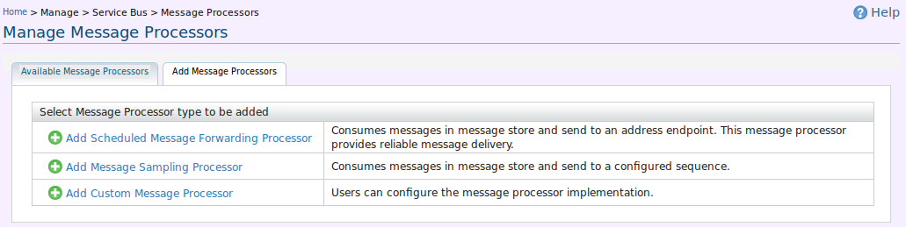
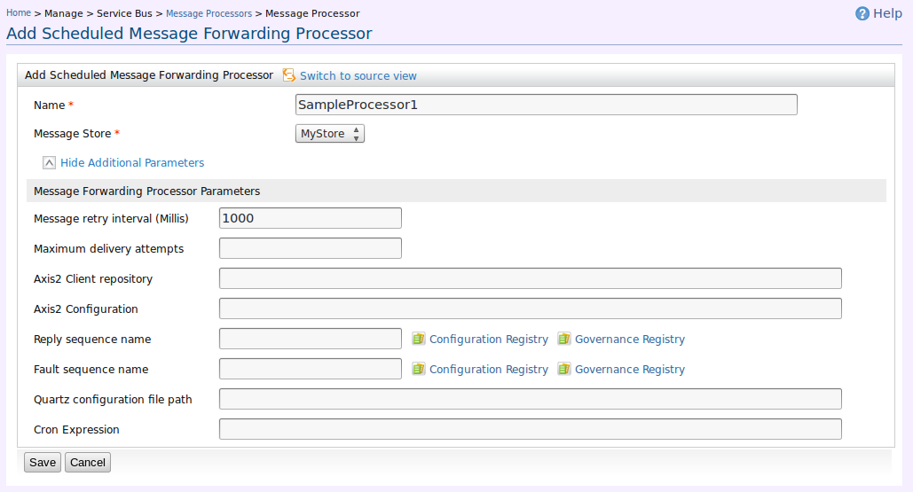
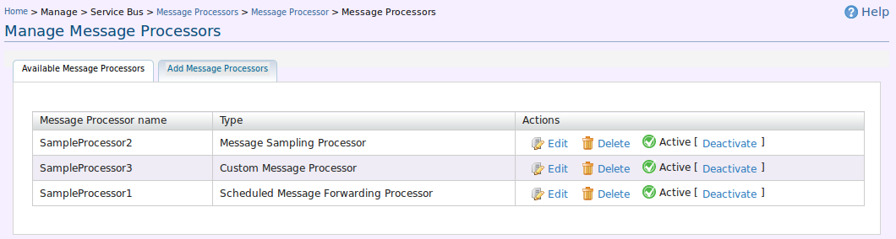
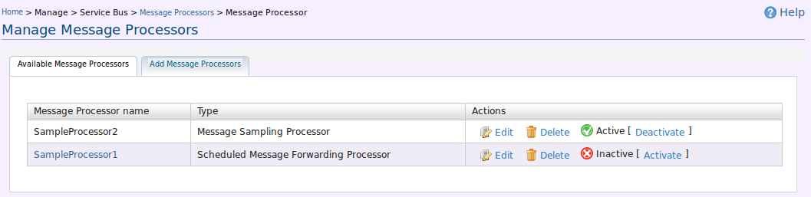
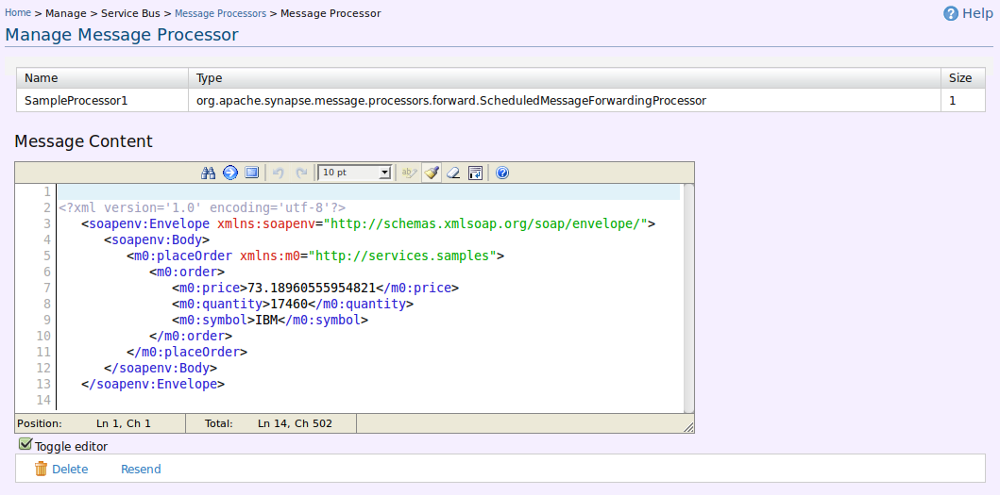

<!DOCTYPE html PUBLIC "-//W3C//DTD HTML 4.01//EN" "http://www.w3.org/TR/html4/strict.dtd">
<!--
 ~ Copyright (c) 2005-2010, WSO2 Inc. (http://www.wso2.org) All Rights Reserved.
 ~
 ~ WSO2 Inc. licenses this file to you under the Apache License,
 ~ Version 2.0 (the "License"); you may not use this file except
 ~ in compliance with the License.
 ~ You may obtain a copy of the License at
 ~
 ~    http://www.apache.org/licenses/LICENSE-2.0
 ~
 ~ Unless required by applicable law or agreed to in writing,
 ~ software distributed under the License is distributed on an
 ~ "AS IS" BASIS, WITHOUT WARRANTIES OR CONDITIONS OF ANY
 ~ KIND, either express or implied.  See the License for the
 ~ specific language governing permissions and limitations
 ~ under the License.
 -->
<html>
<head>
    <meta content="text/html; charset=ISO-8859-1" http-equiv="content-type"/>
    <meta http-equiv="refresh" content="0; url=http://docs.wso2.org/display/ESB490/Message+Processors" />
    <title>Manage Message Processors - User Guide</title>
    <link href="../../admin/css/documentation.css" rel="stylesheet" type="text/css" media="all"/>
</head>


<body>
<!-- removed this as this is a rework -->
<!--<h1>Manage Message Processors</h1>-->

<!--<p>-->
    <!--The Message Processors are set of processors that are intended to consume the ESB messages-->
    <!--stored in-->
    <!--ESB Message stores and do processing.-->
<!--</p>-->
<!--<ol>-->
    <!--<li>In the navigator, under Manage/Service Bus, click <span-->
            <!--style="font-weight: bold;">Message Processors</span>.The <span-->
            <!--style="font-weight: bold; font-style: italic;">Manage Message Processors-->
  <!--</span> page appears.-->
    <!--</li>-->
    <!--<p></p>-->

    <!--<div class="image">-->
        <!--<a name="1"></a>-->

        <!--<p>Figure 1: Message Processor option types </p>-->
    <!--</div>-->
<!--</ol>-->


<!--<h2>Adding Message Processor</h2>-->

<!--<h3>Adding a Scheduled Message Forwarding Processor</h3>-->

<!--<ol>-->
    <!--<li>Click <strong>Add Scheduled Message Forwarding Processor</strong>,-->
        <!--<strong>Add Scheduled Message Forwarding Processor</strong> page appears.-->
    <!--</li>-->
    <!--<p></p>-->

    <!--<div class="image">-->
        <!--<a name="1"></a>-->

        <!--<p>Figure 2: Adding Scheduled Message Forwarding Processor</p>-->
    <!--</div>-->

    <!--<li>Enter the required details, and click <strong>Save</strong>.-->
        <!--The <em><strong>Manage Message Processors</strong></em> page will-->
        <!--display the added Message Processors.-->
    <!--</li>-->

    <!--<p></p>-->

    <!--<div class="image">-->
        <!--<a name="2"></a>-->

        <!--<p>Figure 3: Message Processor List</p>-->
    <!--</div>-->
<!--</ol>-->


<!--<h3>Adding a Message Sampling Processor</h3>-->

<!--<ol>-->
    <!--<li>Click <strong>Add Message Sampling Processor</strong>,-->
        <!--<strong>Add Message Sampling Processor</strong> page appears.-->
    <!--</li>-->
    <!--<p></p>-->

    <!--<div class="image">-->
        <!--<a name="1"></a>-->

        <!--<p>Figure 4: Adding Message Sampling Processor</p>-->
    <!--</div>-->

    <!--<li>Enter the required details, and click <strong>Save</strong>.-->
        <!--The <em><strong>Manage Message Processors</strong></em> page will-->
        <!--display the added Message Processors.-->
    <!--</li>-->

    <!--<p></p>-->

    <!--<div class="image">-->
        <!--<a name="2"></a>-->

        <!--<p>Figure 5: Message Processor List</p>-->
    <!--</div>-->
<!--</ol>-->


<!--<h3>Adding a Custom Message Processor</h3>-->

<!--<ol>-->
    <!--<li>Click <strong>Add Custom Message Processor</strong>,-->
        <!--<strong>Add Custom Message Processor</strong> page appears.-->
    <!--</li>-->
    <!--<p></p>-->

    <!--<div class="image">-->
        <!--<a name="1"></a>-->

        <!--<p>Figure 6: Adding Custom Message Processor</p>-->
    <!--</div>-->

    <!--<li>Enter the required details, and click <strong>Save</strong>.-->
        <!--The <em><strong>Manage Message Processors</strong></em> page will-->
        <!--display the added Message Processors.-->
    <!--</li>-->

    <!--<p></p>-->

    <!--<div class="image">-->
        <!--<a name="2"></a>-->

        <!--<p>Figure 7: Message Processor List</p>-->
    <!--</div>-->
<!--</ol>-->

<!--<h2>Message Processor Operations</h2>-->
<!--<ol>-->
    <!--<li>Users can deactivate the defined message processors listed-->
        <!--in the <strong>Manage Message Processors</strong> page.-->
    <!--</li>-->

    <!--<p></p>-->

    <!--<div class="image">-->
        <!--<a name="2"></a>-->

        <!--<p>Figure 8: Deactivated Message Forwarding Processor</p>-->
    <!--</div>-->


    <!--<li>-->
        <!--Scheduled Message Processor Comes with a User interface to give user some manual-->
        <!--control over message forwarding operations. To use the user interface It must be-->
        <!--deactivated if its in the active state. Using the UI, User can <strong>delete</strong>, <strong>resend</strong>,-->
        <!--<strong>delete all</strong> and <strong>resend all</strong> message in a message processor.-->
    <!--</li>-->
    <!--<p></p>-->

    <!--<div class="image">-->
        <!--<a name="3"></a>-->

        <!--<p>Figure 9: Scheduled Message Forwarding Processor Operations</p>-->
    <!--</div>-->

    <!--<li>When you click <strong>Show Envelope</strong> of a message, the message content will be displayed.-->
    <!--</li>-->

    <!--<p></p>-->

    <!--<div class="image">-->
        <!--<a name="5"></a>-->

        <!--<p>Figure 10: View Message Content</p>-->
    <!--</div>-->
<!--</ol>-->

</body>

</html>